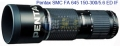

器材库 > 120中幅镜头 > 645 FA 150-300/5.6 ED IF

该产品没有存档的规格参数
半岛2019-10-08 21:16
笨泥2010-09-17 08:194.83 分
操作性 5.00耐用性 4.50性价比 4.50解像力 5.00色彩还原 5.00机械结构 5.00
飞奴2007-12-26 23:414.83 分
操作性 5.00耐用性 4.50性价比 4.50解像力 5.00色彩还原 5.00机械结构 5.00
微距家族2005-08-05 18:464.92 分
操作性 5.00耐用性 4.50性价比 5.00解像力 5.00色彩还原 5.00机械结构 5.00
宾佳2005-01-16 13:154.58 分
操作性 5.00耐用性 4.50性价比 3.50解像力 5.00色彩还原 5.00机械结构 4.50
产品图 / 样片
645 FA 150-300/5.6 ED IF
评测 / 相关文章
该产品暂无存档的评测文章